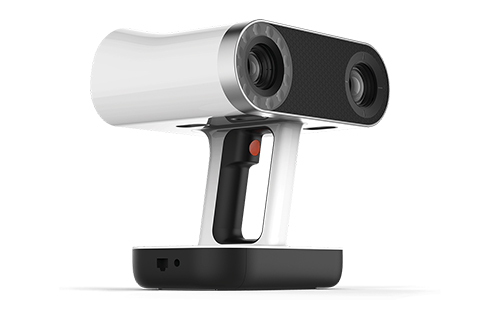
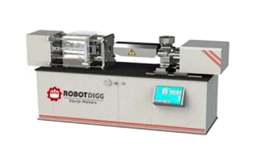

G3B, Thejaswini, Technopark Campus, Kariyavattom, Trivandrum, Kerala 695581
08033948999

Artec Leo
3D Scanner
Artec Leo 3D Scanner
Artec Leo is able to provide the most intuitive workflow, making 3D scanning as easy as taking a video.

Injection Molding Machine
Injection Molding Machine
injection molding machine

Tormach
CNC Lathe
Tormach 15L Slant-PRO
The Tormach 15L Slant-PRO is a compact CNC slant-bed lathe designed for prototyping and light production work.

Artec Leo
3D Scanner
Artec Leo 3D Scanner
Artec Leo is able to provide the most intuitive workflow, making 3D scanning as easy as taking a video.
Injection Molding Machine
Injection Molding Machine
injection molding machine